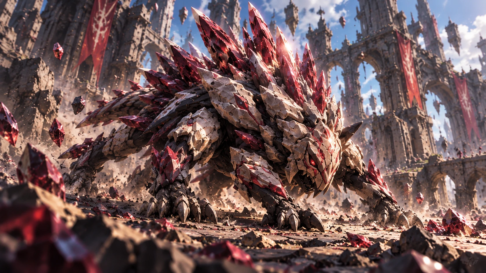

Passive
Embedded
Damaging abilities embed Splinters in enemy Vanguards.
At maximum Splinters, the target becomes Fractured.
A qualifying ability consumes Fractured for a major physical burst.

Korruk is a clever six-legged predator with mineralized skeletal armor, hollow spines, and pressure organs.
He is not an Echo, Flux mutation, construct, hidden god, or secretly humanoid intelligence.
Hunters/miners began harvesting his species' mineralized spines. Korruk tracks stolen material and destroys the industrial storage surrounding it.
A low six-legged predator roughly 1.6m long, built close to the ground and clearly load-bearing on every limb, with a heavy wedge-shaped skull carried low and forward. His back and flanks are armoured in pale bone-coloured mineral plating laid in overlapping layered plates like a pangolin's, scuffed and chipped from use. Crimson crystalline spines rise from his shoulders and back in a dense dorsal crest, longest over the shoulders and tapering toward the tail; they are hollow, and the hollowness has to stay visible, because these are the spines he fires and leaves embedded in a target. Smaller crimson crystal is set into the plates themselves along his chest and limbs, and a single deep red ocular burns in the faceted plating of his skull. The ground around him is littered with loose crimson shards he has already thrown and more hang in the air — his own ammunition, scattered across the ground he is fighting over. At gameplay distance the read is a long low bone-white mass with a crimson crest along its top edge; the crest and the shard-strewn ground are what identify him, and the silhouette has to stay horizontal and animal, hugging the floor. His anatomy works as a real animal's: no spider silhouette, no upright stance, no humanoid proportions. He is native Shatterdeep fauna: not an Echo, a Flux mutation, a construct, or a hidden intelligence in a beast's body, and never machinery despite the faceted plating and the burning eye. Other spine colours are cosmetic variants of the same animal, and crimson is the canon default.
Damaging abilities embed Splinters in enemy Vanguards.
At maximum Splinters, the target becomes Fractured.
A qualifying ability consumes Fractured for a major physical burst.
Cone/cluster launch of mineral spines.
Center hits apply additional Splinters.
Spit a mineral mine to a target area.
After delay/proximity trigger it erupts for physical damage, slow, and Splinters.
Fractured interaction can cause immediate detonation/knockup behavior.
Concussive pressure pulse.
Low base damage on its own, but consumes embedded Splinters/Fractured state for very high physical burst.
Rain waves of mineral spines into a large area.
Repeated hits apply damage and Splinters.
The final pressure wave detonates Fractured targets.
Docs/Design/Vanguards/08-korruk.yaml.
Narrative and abilities: Veyra_Initial_Roster_Character_Bible_v0.6.md §8.
Generated by render_sheet.py.